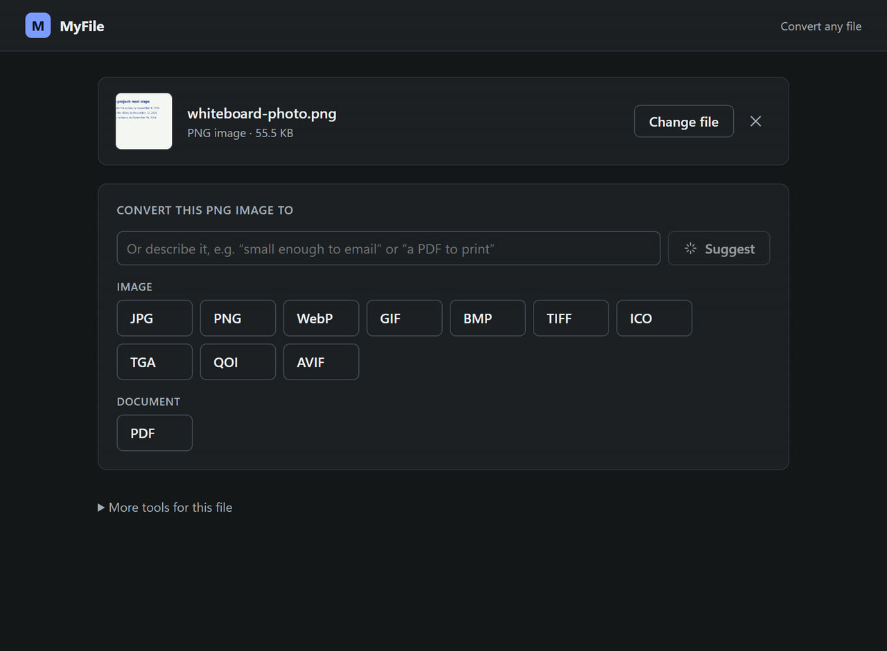
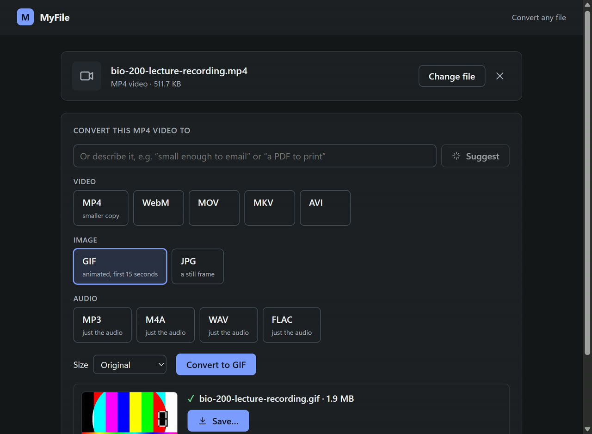
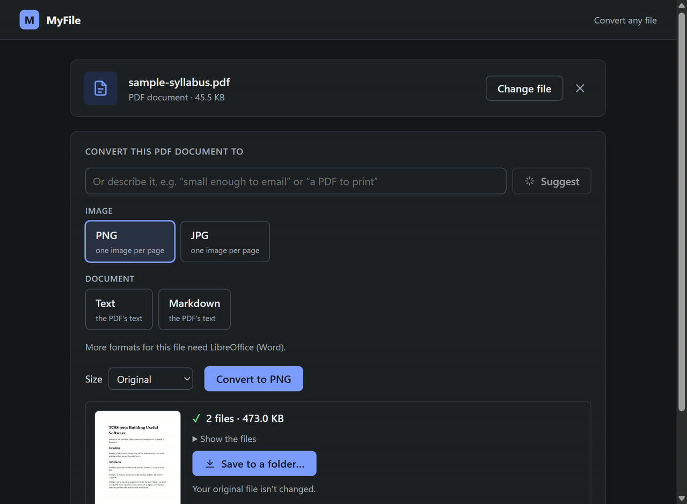

MyFile
converts any file.
A desktop file converter for Windows and macOS. Drop in a file and it shows what it can become. Pick a format, or just describe what you need, like "small enough to email", and AI picks the conversion for you.
Three steps, and your original is never touched
Drop a file
MyFile reads what the file really is from its contents, not just its name, and lists every format it can become, grouped by kind.
Pick a format, or describe it
Click a format, or type what you need. The AI chooses one conversion from that file's list and suggests quality, size or bitrate.
Convert and save
Conversion runs on your computer with live progress. Save the copy wherever you want; several files (like PDF pages) go into a folder.
The real app, converting real files



The AI makes one decision. My code checks it.
The model never touches your files or runs anything. It answers one bounded question, and ordinary code decides whether to accept the answer.
AI What the model does
- Reads your request ("a PDF to print", "small enough to email") and picks one conversion from this file's list.
- Suggests settings: quality, size, or audio bitrate.
- Under More tools: summarizes documents, finds deadlines, fact-checks claims, and fills templates, always citing quotes.
- Runs on a free local model (Qwen through Ollama) by default, or Claude through Claude Code.
Code What my code does
- Rejects any pick that isn't really on the list for that file, and snaps settings to allowed values.
- Does every conversion itself (Rust, ffmpeg, a PDF renderer). The AI never sees a file's contents to convert it.
- Checks every quote the AI gives against the real document, and keeps wrong or invented dates off calendars.
- Asks permission before any text goes to Claude, and never overwrites your original.
Testing caught real AI mistakes. The local model once put a 2026 date in 2022, and once gave "every Friday" an exact date. Now my code fills in a missing year itself and flags dates that aren't in the quoted text.
What it converts
Images
JPG, PNG, WebP, GIF, BMP, TIFF, ICO, TGA, QOI, AVIF, and PDF. Also reads HEIC, PSD and more. Quality and size settings.
One PNG or JPG per page, or the text as plain text or Markdown.
Documents and ebooks
Markdown, text and HTML to PDF or HTML. Text from Word, PowerPoint, OpenDocument and EPUB.
Data and spreadsheets
CSV, TSV, JSON, YAML, TOML, XML and Excel to each other, keeping key order and leading zeros.
Audio and video
MP3, M4A, WAV, FLAC, OGG, Opus; MP4, WebM, MOV, MKV, AVI; animated GIF; or just the audio.
Subtitles and archives
SRT, VTT and ASS to each other or plain text. Extract ZIP and TAR, or repack between them.
Watch it convert
Build log
2026-10-21, Environment check and AI provider decision
- I pasted the Artifact 3 assignment and my plan for MyFile into Claude Code and asked it to build the app.
- Claude checked my computer first. Rust and the C++ build tools were missing, so I let it install them.
- We went with Claude Code in headless mode for the AI, so I didn't need a paid API key.
2026-10-21, First version
- Claude built the app with Tauri (Rust backend, React frontend). You drop a file in and it shows what you can do with it.
- The main feature was an AI assistant that summarizes documents and finds deadlines.
- My code checks every quote the AI gives against the real document, and it asks me before sending anything to Claude.
- Claude made a test with trick documents and a hidden prompt injection. Haiku did about as well as Sonnet for way cheaper.
2026-10-22, Adding a lot more
- I wanted the project to be more eye-opening, so I kept asking for more features.
- I made a free local AI model (Ollama) the default so my files stay on my computer. Claude is still an option.
- Claude added folder mode for a whole semester of syllabi, OCR, comparing two versions of a file, fact-checking, templates, a duplicate finder, speech to text, and search across my files.
2026-10-23, Switching to a file converter
- I realized the app turned into mostly a summarizer, but I wanted a file converter. I told Claude that and pasted a big list of file formats.
- Now when you drop a file, it shows what it can be converted to: images, PDF pages, Word/Excel/PowerPoint text, CSV/JSON/YAML, audio, video, subtitles, and ZIP files.
- I added a "describe it" box. I can type something like "small enough to email" and the AI picks the conversion and settings. The code only lets it pick from the list for that file.
- I told Claude the screen was too chaotic, so it cleaned up the main page and moved the old tools into "More tools for this file."
- I also had it fix the loading spinner because it was a long stretched bar instead of a circle.
2026-10-25, Wrapping up
- Claude built the Windows installers and checked the project against the assignment requirements.
- I had it shorten this log so it matches my other logs.
- I pushed everything to GitHub. The Mac build failed at first because the speech-to-text part needs a newer macOS, so Claude set the minimum to macOS 10.15. Then it failed again while packaging, so it split the Mac build into separate Apple Silicon and Intel apps. Now Windows and both Mac builds pass.
- I felt like the project looked like no effort went into it, even though a lot was built. So I had Claude make it look better: a browser version of the converter on my portfolio (it converts many files at once and has a before/after slider), a new project page with real screenshots, and a new demo video of the converter.
- Testing the browser version caught that PDF and MP3 conversions stalled when the tab wasn't visible, so Claude fixed that.
- I published a release on GitHub so people can download the app for Windows or Mac.
- A PDF was still showing Word as an option, which doesn't make sense, so I had Claude remove it. A PDF now only converts to images (one per page) or its text.
Issues
- Asking for "everything" made the app way too big and messy, so I had to step back and focus on converting files. Next time I'd decide the main purpose first.
- Testing caught some real bugs that Claude fixed: the AI put a date in the wrong year (2022 instead of 2026), the installed app ran 7x slower because of a build setting, and JSON to YAML mixed up the order of things.
- Some tools aren't installed on my computer, so those parts aren't tested yet. OCR needs Tesseract (the install got cancelled), and Word/Excel/PowerPoint to PDF needs LibreOffice.
- I don't have a Mac, so the Mac version builds and passes its tests on GitHub, but I haven't run it on a real Mac.
- The browser version can't do everything the desktop app can. The AI "describe it" box and video conversion need the desktop app.